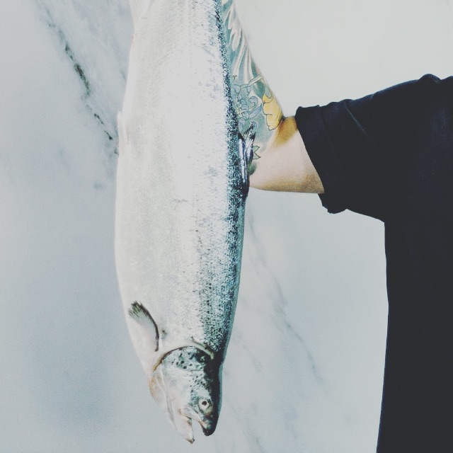

Klubbstatistikk
Oktobers ledere
| Nr. | Navn | Fisk | Kg |
|---|---|---|---|
| 1 | Maltsar Nordjordsmann | Flyndre | 16.5 |
| 2 | Mari Kandel | Torsk | 13.3 |
| 3 | Falk Fisker | Laks | 11.3 |
| 4 | Johnny Jager | Sild | 10.8 |
| 5 | Ammar Agner | Torsk | 10.4 |
| 6 | Karl Mordsmann | Flyndre | 10.2 |
| 7 | Mari Måke | Torsk | 9.8 |
| 8 | Petter Sprell | Flyndre | 9.6 |
| 9 | Lars Larsen | Torsk | 9.3 |
| 10 | Otto Ålmann | Flyndre | 9.0 |
| 11 | Mario Pesce | Torsk | 8.9 |
| 12 | Tor Berre | Sild | 0.2 |
Gjennom tidene
| Nr. | Navn | Fisk | Kg |
|---|---|---|---|
| 1 | Maltsar Nordjordsmann | Flyndre | 16.5 |
| 2 | Mari Kandel | Torsk | 13.3 |
| 3 | Falk Fisker | Laks | 11.3 |
| 4 | Johnny Jager | Sild | 10.8 |
| 5 | Ammar Agner | Torsk | 10.4 |
| 6 | Karl Mordsmann | Flyndre | 10.2 |
| 7 | Mari Måke | Torsk | 9.8 |
| 8 | Petter Sprell | Flyndre | 9.6 |
| 9 | Lars Larsen | Torsk | 9.3 |
| 10 | Otto Ålmann | Flyndre | 9.0 |
| 11 | Mario Pesce | Torsk | 8.9 |
| 12 | Tor Berre | Sild | 0.2 |
Send inn rekord
Ukens vinner:

Johnny er ukens vinner med litt av en fangst! Premien for denne uken var et cruise til Tromsø! Ha det gøy Johnny!
IKKE JUKS!
Vi har nulltoleranse for juks og falske innsendinger. Tull kan lede til alvorlige konsekvenser!